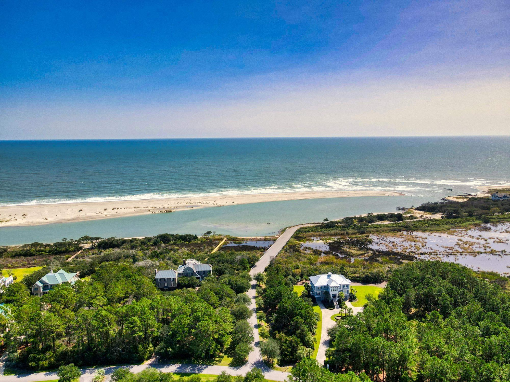
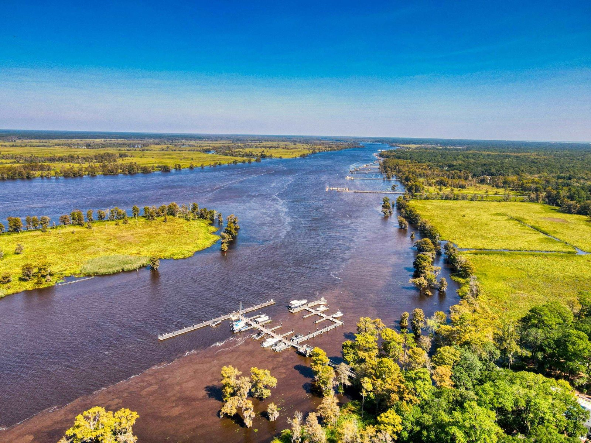

Prince George Ocean
Prince George Ocean
2735 Vanderbilt Boulevard
$3,395,000
To be built, by Goggans Architecture. Five bedrooms with an office and a loft, 4,728 sq ft on 1.61 acres with pond frontage.
Design preview prepared for The Litchfield Company by Seth Bass, Triskope. This is not the brokerage's website. Theirs is thelitchfieldcompany.com.

Pawleys Island, Georgetown County
Nineteen hundred gated acres between the Atlantic and the Waccamaw River, on the lower Waccamaw Neck just south of Pawleys Island.
Prince George is a single tract of about 1,900 acres that runs from the ocean, across Highway 17, to the river. Much of it is kept as it was: tidal creeks, wetlands, lakes, and pine and hardwood forest, on ground that was rice fields and hunting land before it was anything else.
On the river side, the community is buffered by the Waccamaw on the west and by preserved land on the east, including an undisturbed stretch of the Old Kings Highway under easement. The Community Association describes the design theme as traditional and historic Lowcountry. There is no golf course.

Highway 17 divides Prince George into Prince George Ocean and Prince George River. Residents of either side use both.


Homes and homesites come to market here a few at a time. The link opens everything listed today, on both sides, and the firm's market reports give the wider picture.
Prince George Ocean
$3,395,000
To be built, by Goggans Architecture. Five bedrooms with an office and a loft, 4,728 sq ft on 1.61 acres with pond frontage.

Georgetown County schools serve the community. Confirm attendance zones with the district.
Homesites, houses to be built, and the few resales are best discussed with an advisor who works this community. A call is the quickest way, and the form reaches the same person.
Advisor (sample, not a real person)
Jenna Alvarez
Direct line and email to come from the brokerage.